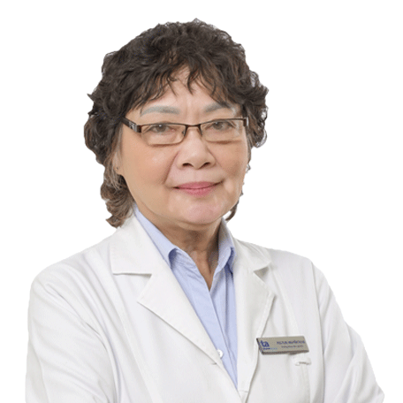

Giám đốc Trung tâm Tim mạch
Bệnh viện Đa khoa Tâm Anh TP.HCM
PGS.TS.BS Phạm Nguyễn Vinh là một trong những chuyên
gia đầu ngành trong lĩnh vực Nội tim mạch tại Việt Nam. Sau khi tốt nghiệp
Bác
sĩ Y khoa chuyên khoa Tim mạch trường Đại học Y khoa Sài Gòn, bác sĩ Phạm
Nguyễn
Vinh sang Pháp tu nghiệp trong hai...

Bác sĩ cao cấp Khoa Tiết niệu Nam học và Thận học
Bệnh viện Đa khoa Tâm Anh Hà Nội
NGND.GS.TS.BS Trần Quán Anh là người đầu tiên đặt nền móng cho ngành Nam học
Việt Nam. Ông là Tổng Thư ký Hội Tiết niệu - Thận học Việt Nam, Hội viên Hội
Tiết niệu thế giới (S.I.U), là người khởi xướng xây dựng phân khoa nam học,
thuộc Khoa tiết...
Giám đốc Trung tâm Tiết niệu - Thận học
Bệnh viện Đa khoa Tâm Anh TP.HCM
TTƯT.PGS.TS.BS Vũ Lê Chuyên là một trong những người đặt nền móng đầu tiên
cho ngành phẫu thuật nội soi tiết niệu tại Việt Nam. Với hơn 40 năm cống
hiến cho ngành Tiết niệu - Thận học, Phó giáo sư Vũ Lê Chuyên đã đạt được
nhiều thành tích và danh...
Giám đốc chuyên môn
Giám đốc Trung tâm đào tạo & Nghiên cứu khoa học
Bệnh viện Đa khoa Tâm Anh TP.HCM
PGS.TS.BS Phạm Nguyễn Vinh là một trong những chuyên
gia đầu ngành trong lĩnh vực Nội tim mạch tại Việt Nam. Sau khi tốt nghiệp
Bác
sĩ Y khoa chuyên khoa Tim mạch trường Đại học Y khoa Sài Gòn, bác sĩ Phạm
Nguyễn
Vinh sang Pháp tu nghiệp trong hai...
Giám đốc Trung tâm Sản phụ khoa
Bệnh viện Đa khoa Tâm Anh TP.HCM
Bác sĩ Nguyễn Bá Mỹ Nhi - nguyên Phó Giám đốc phụ trách chuyên môn Bệnh viện
Phụ sản Từ Dũ, Giám đốc chuyên môn Trung tâm Sản Phụ khoa - Bệnh viện Đa
khoa Tâm Anh TP.Hồ Chí Minh là một trong những chuyên gia hàng đầu trong
lĩnh vực Sản phụ khoa với...

Bác sĩ cao cấp khoa Chấn thương chỉnh hình
Trung tâm chấn thương chỉnh hình
Bệnh viện Đa khoa Tâm Anh Hà Nội
TTND.GS.TS.BS Nguyễn Việt Tiến được biết đến là một người thầy thuốc nhiệt
thành, tận tâm, giàu y đức, luôn miệt mài nghiên cứu và hết lòng vì sức khỏe
người bệnh. Trong suốt khoảng thời gian gắn bó với nghề y, thầy luôn tâm
niệm niềm hạnh phúc và...
Giám đốc Trung tâm Chấn thương chỉnh hình
Bệnh viện Đa khoa Tâm Anh TP.HCM
Là người mở đường cho ngành Phẫu thuật Nội soi khớp Việt Nam vươn ra thế
giới, sau gần 30 năm lĩnh hội tinh hoa, đến nay, TS.BS Tăng Hà Nam Anh đã
trở thành ân nhân của hàng ngàn bệnh nhân mắc các chấn thương khớp vai, khớp
khuỷu, khớp cổ tay, khớp...
Trưởng khoa Khoa Tiêu hóa - Gan mật - Tụy
Bệnh viện Đa khoa Tâm Anh Hà Nội
Với gần 25 năm công tác trong ngành Y, TTƯT.TS.BS Vũ Trường Khanh được biết
đến là một trong những chuyên gia hàng đầu tại Việt Nam trong lĩnh vực Tiêu
hóa – Gan Mật – Tụy.
Giám đốc trung tâm Trung tâm Nội soi và Phẫu thuật nội soi tiêu hóa
Bệnh viện Đa khoa Tâm Anh TP.HCM
TS.BS Đỗ Minh Hùng đã có gần 30 năm kinh nghiệm chẩn đoán và điều trị các
bệnh lý tiêu hóa, đặc biệt là chuyên ngành Tiêu hóa - Gan mật. Với hàng chục
năm làm việc tại các bệnh viện lớn như Bệnh viện Bình Dân, Bệnh viện FV,
Bệnh viện AIH, Bệnh viện...
Giám đốc Trung tâm sơ sinh
Bệnh viện Đa khoa Tâm Anh TP.HCM
Với sự kỳ diệu của y học hiện đại, bằng tình yêu thương vô bờ bến và tâm
huyết cống hiến với nghề, suốt hơn 30 qua, TS.BS Cam Ngọc Phượng không nhớ
mình đã dốc sức chăm sóc, ôm ấp, vỗ về, yêu thương và trao tặng cuộc sống kỳ
diệu cho bao nhiêu trẻ...
Phó khoa Tiết niệu Nam học và Thận học
Bệnh viện Đa khoa Tâm Anh Hà Nội
Với hơn 30 năm gắn bó với nghề, hoàn thành nhiều nghiên cứu khoa học, bác sĩ
Nguyễn Thế Trường đã nhận được 3 bằng khen của Bộ trưởng Bộ Y tế về công tác
nghiên cứu khoa học và phong trào thi đua yêu nước.
Trưởng khoa Khoa nhi
Bệnh viện Đa khoa Tâm Anh TP.HCM
PGS.TS.BS Vũ Huy Trụ là một trong những chuyên gia đầu ngành trong lĩnh vực
khám và điều trị bệnh lý nhi khoa tại Việt Nam. Sau khi tốt nghiệp Bác sĩ Y
khoa tại Trường Đại học Y Dược TP.HCM, bác sĩ Vũ Huy Trụ lựa chọn theo đuổi
bộ môn Nhi, dành trọn...
Cố vấn chuyên môn khoa Tai Mũi Họng
Bệnh viện Đa khoa Tâm Anh TP.HCM
PGS.TS.BS Trần Phan Chung Thủy là chuyên gia Tai Mũi Họng hàng đầu tại Việt
Nam. Với hơn 35 năm công tác, Phó giáo sư Trần Phan Chung Thủy đã có nhiều
đóng góp to lớn cho sự phát triển của nền y học nước nhà.
Trưởng khoa Khoa Tai mũi họng
Bệnh viện Đa khoa Tâm Anh TP.HCM
ThS.BS.CKII Trần Thị Thúy Hằng là một trong những bác sĩ hàng đầu lĩnh vực
Thanh học tại Việt Nam. Không chỉ có trình độ chuyên môn cao, nhiều năm kinh
nghiệm thực tiễn tại các bệnh viện uy tín Bệnh viện FV và Bệnh viện Tai Mũi
Họng Sài Gòn,...
Phó Tổng Giám đốc chuyên môn
Hệ thống BVĐK Tâm Anh
Cố vấn chuyên môn Khoa hô hấp
Bệnh viện Đa khoa Tâm Anh Hà Nội
PGS.TS.BS Vũ Huy Trụ là một trong những chuyên gia đầu ngành trong lĩnh vực
khám và điều trị bệnh lý nhi khoa tại Việt Nam. Sau khi tốt nghiệp Bác sĩ Y
khoa tại Trường Đại học Y Dược TP.HCM, bác sĩ Vũ Huy Trụ lựa chọn theo đuổi
bộ môn Nhi, dành trọn...
Giám đốc Trung tâm Hỗ trợ sinh sản
Bệnh viện Đa khoa Tâm Anh TP.HCM
ThS.BS Giang Huỳnh Như là một trong những chuyên gia hỗ trợ sinh sản hàng
đầu khu vực phía Nam được đông đảo các cặp vợ chồng hiếm muộn yêu mến và tin
tưởng lựa chọn điều trị. Ngoài bề dày kinh nghiệm gần 20 năm công tác tại
các bệnh viện lớn hàng...
Trưởng khoa Khoa Ung bướu
Bệnh viện Đa khoa Tâm Anh TP.HCM
Gần 20 năm gắn bó với chuyên ngành Ung bướu, Bác sĩ Trần Vương Thảo Nghi đã
không biết bao nhiêu lần tạo nên những câu chuyện “cổ tích” ngoài đời thực,
giúp người bệnh luôn tin rằng Ung thư không phải là dấu chấm hết.
Giám đốc trung tâm Trung tâm Xét nghiệm
Giám đốc Bệnh viện Đa khoa Tâm Anh TP.HCM
Để chẩn đoán chính xác tình trạng bệnh và điều trị hiệu quả, ngoài việc thăm
khám lâm sàng, các bác sĩ phải kết hợp các xét nghiệm và những kỹ thuật y
học cận lâm sàng để chẩn đoán bệnh. Vì vậy, đằng sau thành công của mỗi ca
bệnh là sự đóng góp thầm...

Trưởng khoa Trung tâm Xét nghiệm
Giám đốc Trung tâm đào tạo & Nghiên cứu khoa học
Bệnh viện Đa khoa Tâm Anh Hà Nội
Không chỉ là một chuyên gia đầu ngành trong lĩnh vực xét nghiệm,
NGND.PGS.TS.BS Nguyễn Thị Hà - Trưởng khoa Xét nghiệm, Bệnh viện Đa khoa Tâm
Anh Hà Nội còn là một giáo sư khoa học, một nhà giáo nhân dân tận tụy với
công tác trồng người.
Bác sĩ cao cấp Khoa Ngoại tổng hợp
Bệnh viện Đa khoa Tâm Anh Hà Nội
Với mong muốn nâng cao chất lượng dịch vụ khám chữa bệnh cao cấp theo chuẩn
quốc tế, trong những năm qua, GS.TS.BS Hoàng Anh Dũng đã nghiên cứu và triển
khai nhiều hình thức chủ động, linh hoạt, phát huy thế mạnh hợp tác trong và
ngoài nước, tạo cơ...
Phó khoa Ngoại tổng hợp
Bệnh viện Đa khoa Tâm Anh Hà Nội
Bác sĩ Nguyễn Văn Trường được nhiều người biết đến với vai trò là một chuyên
gia về phẫu thuật lồng ngực mạch máu. Sau khi tốt nghiệp chuyên ngành bác sĩ
đa khoa, bác sĩ Trường tiếp tục hoàn thành chương trình thạc sĩ ngoại khoa
và bác sĩ chuyên khoa...
Quản lý Thử nghiệm lâm sàng Vắc xin
Trung tâm đào tạo & Nghiên cứu khoa học
Bệnh viện Đa khoa Tâm Anh TP.HCM
Phó Giáo sư, Tiến sĩ, Bác sĩ Trần Ngọc Hữu tốt nghiệp Bác sĩ Y khoa tại
Trường Đại học Y Dược TP.HCM (1) từ năm 1979. Sau đó, PGS Ngọc Hữu hoàn
thành chương trình đào tạo Thạc sĩ chuyên ngành Quản lý Chăm sóc sức khỏe
ban đầu tại trường Đại học...
Giám đốc Trung tâm Hỗ trợ sinh sản
Bệnh viện Đa khoa Tâm Anh Hà Nội
PGS.TS.BS Lê Hoàng là một trong nhóm bác sĩ đầu tiên ở miền Bắc được cử đi
đào tạo về kỹ thuật thụ tinh ống nghiệm (IVF) ở nước ngoài và trở thành “sứ
giả IVF” đã mang “lộc” con đến với hàng nghìn gia đình.
Phó giám đốc Trung tâm Hỗ trợ sinh sản
Bệnh viện Đa khoa Tâm Anh Hà Nội
PGS.TS.BS Vũ Huy Trụ là một trong những chuyên gia đầu ngành trong lĩnh vực
khám và điều trị bệnh lý nhi khoa tại Việt Nam. Sau khi tốt nghiệp Bác sĩ Y
khoa tại Trường Đại học Y Dược TP.HCM, bác sĩ Vũ Huy Trụ lựa chọn theo đuổi
bộ môn Nhi, dành trọn...